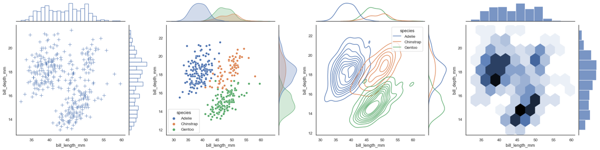
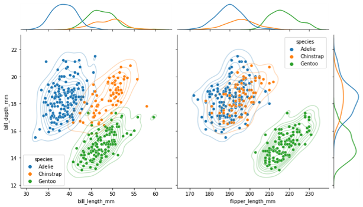
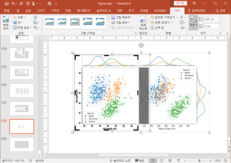
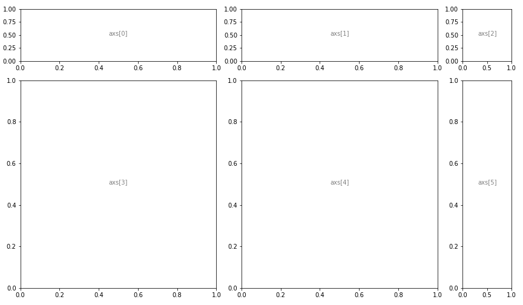
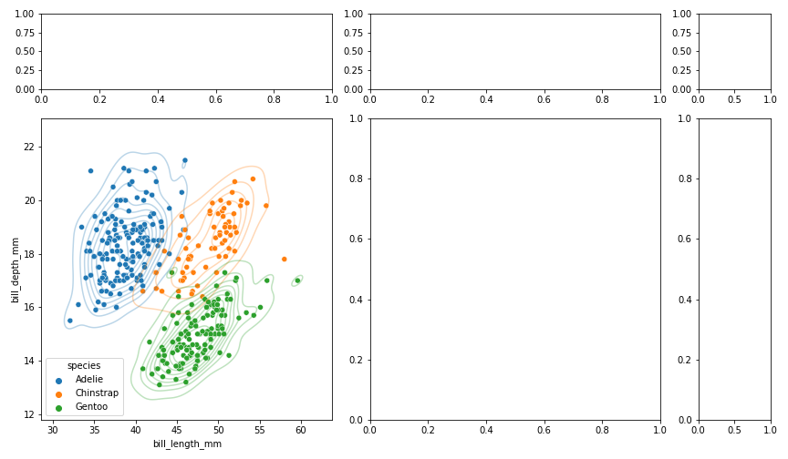
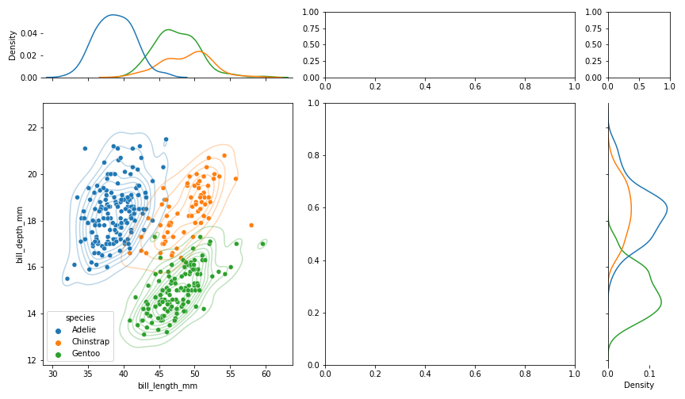
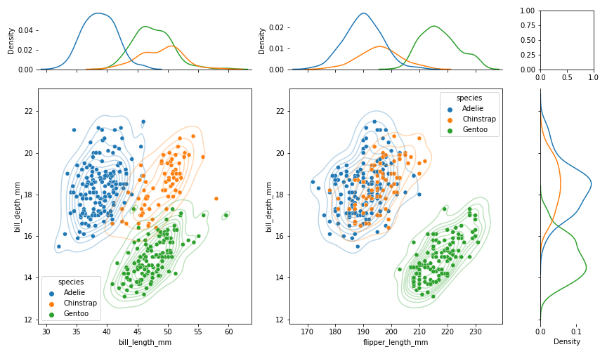
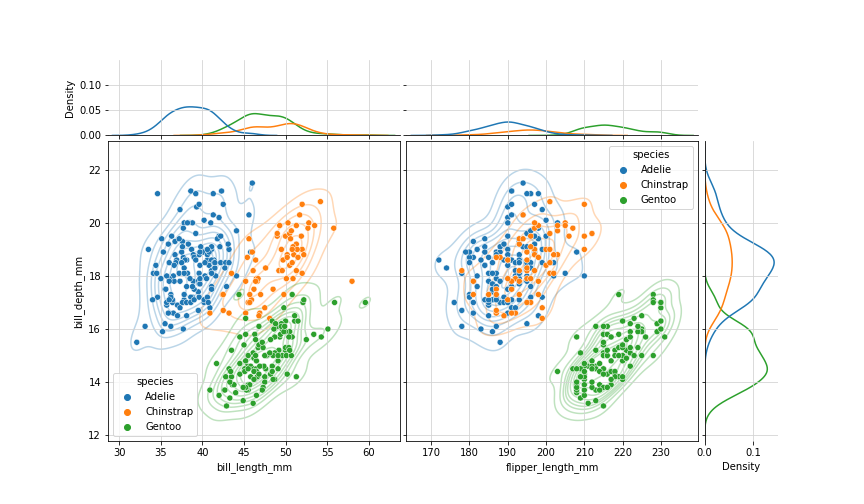
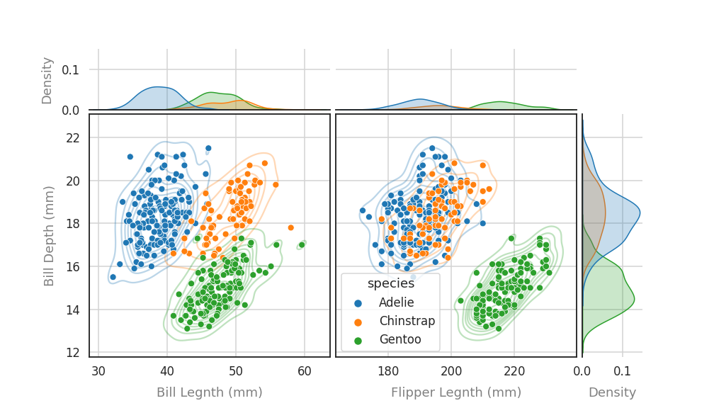
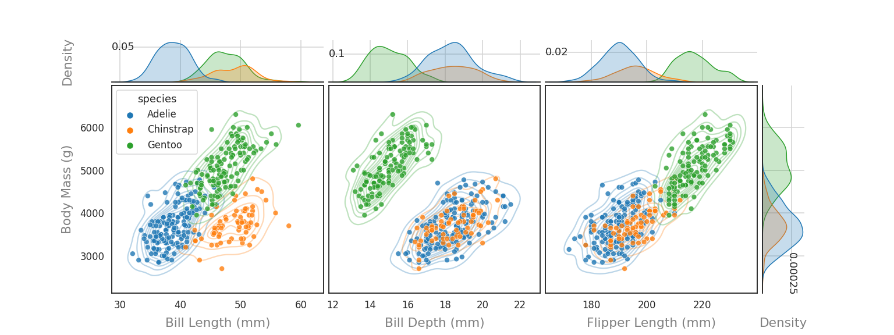

2. seaborn + matplotlib을 이용한 jointplot 보완
- seaborn을 matplotlib과 섞어쓰는 방법입니다.
- 4부 중 두 번째 시간입니다.
- seaborn jointplot의 단점을 보완합니다.
2.1. seaborn jointplot
-
seaborn의
jointplot은 매력적인 기능입니다.- 두 변수 각각의 분포와 2차원 분포를 함께 보여줍니다.
- 각각의 분포는
histogram과kdeplot으로 표현할 수 있고 - 2차원 분포는
scatterplot,regression,kdeplot,hexbin등으로 표현할 수 있습니다.
-
만약 matplotlib에서 일일이 만들어야 한다면 눈물이 앞을 가릴 일입니다.
-
seaborn에서는 단 한 줄로 이런 그림들이 탄생합니다.

2.2. multiple jointplot
-
그러나 seaborn 만으로는 여러 jointplot이 합쳐진 그림을 표현할 수 없습니다.
-
y축을 공유시키는 것 만으로도 훨씬 기능이 강력해질텐데요.
 -
현실적으로 가장 빠른 방법은 파워포인트입니다.
-
같은 y축 범위로 그림을 여러 개 그린 후 붙이면 됩니다.
 -
그러나 수작업이 동반되고, 오류 가능성이 커집니다.
-
seaborn과 matplotlib의 힘을 합해서 그려봅시다.
2.3. matplotlib + seaborn
- 지난 글에서 seaborn과 matplotlib이 섞일 수 있음을 보였습니다.
- matplotlib으로 틀을 만들고 여기에 seaborn을 삽입합니다.
1 | import matplotlib.pyplot as plt |
- 가로축에 두 개의 데이터 :
bill_length_mm,flipper_length_mm, - 세로축에 한 개의 데이터 :
bill_depth_mm를 놓아보겠습니다.
2.3.1. 축공간 배열 : gridspec
-
저는 matplotlib을 객체지향 방식으로 사용할 때 이렇게 합니다.
fig, ax = plt.subplots()명령으로figure와axes를 만드는데- 가로세로 여러 axes를 만들 때는
ncols,nrows인자를 사용합니다. - 그러나 이렇게 하면 모든 축공간의 크기가 같아집니다.
-
jointplot은 축공간의 크기가 일정하지 않습니다. -
gridspec을 이용해서 비대칭 축공간을 만듭니다.
1 | fig = plt.figure(figsize=(12,7)) |

- 축공간은 원래 2차원 배열입니다.
- 하지만 이를 별로 좋아하지 않아서,
dictionary를 사용해 1차원으로 취급합니다. - 개인적인 취향입니다. 꼭 따르지 않아도 좋습니다.
2.3.2. 첫 번째 jointplot : scatterplot + kdeplot
- 좌측 하단에 첫 번째 2차원 분포도를 그립니다.
- x축 변수는
bill_length_nm, y축 변수는bill_depth_mm로 지정합니다. - seaborn 명령의
ax=인자를 사용해 축공간을 지정합니다.
1 | fig = plt.figure(figsize=(12,7)) |

2.3.3. 첫 번째 jointplot : 1차원 kdeplot
-
첫 번째 jointplot의 상단과 우측에 1차원 분포도를 그립니다.
-
두 가지를 주의해야 합니다.
- 중심이 되는 jointplot과 가로세로 범위를 일치시켜야 합니다.
- 1차원 분포도의 눈금과 수치는 필요없으니 제거합니다.
1 | fig = plt.figure(figsize=(12,7)) |

2.3.4. 두 번째 jointplot
- 같은 요령으로 두 번째 분포도 도시합니다.
- 첫 번째 jointplot에서 x 변수만 바꿔주면 됩니다.
1 | fig = plt.figure(figsize=(12,7)) |

2.3.5. 부대효과 조정 : spines, grids, 간격
- 데이터는 모두 올라갔으니 부대 효과를 조정합니다.
- 불필요한 요소(ex.
spines)는 제거하고, 애매한 요소(ex. 위치)는grid로 명확히 합니다.
1 | fig = plt.figure(figsize=(12,7)) |

- 1차원 분포의 스케일도 맞춰주었습니다.
- 그러나 꼭 필요한 작업인지는 의구심이 듭니다.
- ‘밀도’라는 정의에 맞게 넓이를 1로 만드는 과정이 포함되어 있는데, 이로 인해 x축 스케일이 크면 높이가 낮아지는 경향이 있기 때문입니다.
- 데이터의 범위에 집중하고 싶다면 스케일을 맞추지 않는 것이 나을지도 모릅니다.
2.3.6. 마무리 작업
- 데이터를 표현하는 작업은 사실상 완료되었습니다.
- 폰트의 크기, 색상 등 가독성을 높입니다.
- 이 때도 seaborn의
set_style()과set_context()를 사용하면 편리합니다.
1 | sns.set_style("white") |

jointplot의 한계인 2중 jointplot이 구현되었습니다.
2.3.7. generalize : 함수로 만들기
- 하는 김에, 기능을 일반화합시다.
- 다중 jointplot 제작 기능을 함수로 만들고,
- x 변수의 수와 그림 크기, 1차원 분포 스케일 통일 등을 인자로 만듭니다.
1 | def jointplots(xs, y, data, hue=None, height=6, ratio=5, space=0.2, xlabels=None, ylabel=None, margin_norm=False): |
- X인자의 수가 바뀌어도 jointplot이 안정적으로 그려집니다.
- 1차원 분포도 표현 방식을 바꾸어 전보다 깔끔해졌습니다.
1 | jointplots(["bill_length_mm", "bill_depth_mm", "flipper_length_mm"], "body_mass_g", penguins, hue="species", |

2.4. 결론
-
seaborn의 jointplot을 가져다 쓰는 데 그치지 않았습니다.
-
matplotlib의 객체지향 방식을 이용해 seaborn의 한계를 벗어날 수 있었습니다.
-
본 예제에서는
scatterplot과 2차원kdeplot만 결합했습니다. -
그러나 이 외에도 seaborn과 matplotlib이 제공하는 거의 모든 기능을 결합할 수 있습니다.
-
매뉴얼의 한계에 얽매이지 말고 상상력을 동원해 보시면 어떨까요.